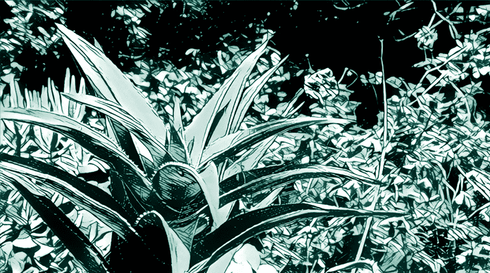
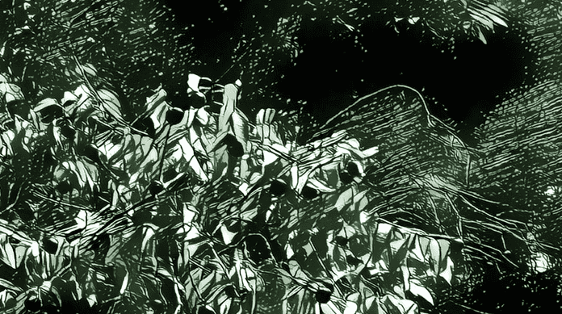
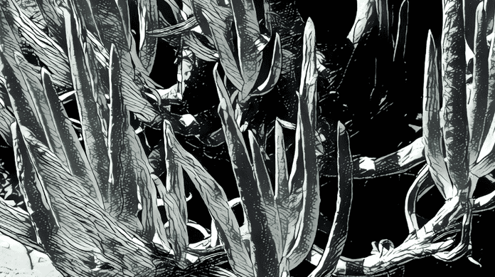

An experimental eventually-valuable token, initially priced at zero
Tokens sold during an Initial Coin Offering (ICO) are usually backed by a service which pretends to guarantee that the token will increase its value.
Against this claim, many recent ICOs have demonstrated that the declared value of a token is
irrelevant for the market.
Having seen this, the thesis that 0xNIL wants to verify is:
Token's prices are arbitrary and depend on a perception of their value which has little to do with their declared value.
Introducing the NIL, a token with a price set at zero.
During the Token Free Distribution (TFD), those who send 0 ether to the contract address will receive some amount of NIL in exchange. To obtain more NIL, just send 0 ether again, and so on until the per-wallet limit is reached.
This is an experiment and nobody can know if the NIL will be eventually traded. But if yes, any future earning will be a 100% gain.
The code for the TDE can be audited on Github.
There will be a pre-distribution in December 2017, and a final distribution in the first quarter of 2018.
Subscribe to the mailing list to stay informed.
More facts in the introduction blog post:
0xNIL — Experimenting the Perception of Value in the Internet of Money
The ICOs madness has brought to the market successful tokens, like the GNT, as well as struggling tokens, like BAT and BNT. If the NIL will find a place in the market, it will set a minimum level that others have to satisfy.
If the NIL will be traded, any company which wants to sell a token in a crowd sale has to give better justification for why they are raising money. If not, it will be compared with this special token given for free.
The success of useless tokens, like the EUT, has already shown that investors don't pay attention to the presentation. The NIL is a further step to push the experiment to the extreme, because here nothing is sold.
Initial Coin Offerings have many problems
Despite the token price unreliability, which is a problem mostly for the investors, the ICOs are showing a lot of problems for the projects who run them, starting from
- Regulatory problems when the token is seen as a security
- Heavy taxation when the token is seen as an utility
A major problem for the community is that since raising money is so easy, scammers are creating a lot of "belieavable" projects that either disappears or simply "fail" after a while.
In many case, even if the project is legittimate, the founders have low motivation to reach the promised goal because they already had their exit.
An alternative, better approach to fund raising
Imagine that a project distributes its tokens for free and later creates value for them, using that value to growth the product and prepare an "exit" for the founders. The pros of this approach are evident:
- No regulatory problems because nothing is being sold
- No taxation while the token is hold
- High motivation for the team to do its best because their personal success depends on the success of token and project
- No scams because no money are easily collected
- No initial costs for the community
A future more just
There was a time where the best services on the centralized Internet required a payment.
At some point, companies started offering great services for free.
It's not hard to imagine a future where companies and institutions will distribute coins for free. For example, a city could distribute to all their citizen a local token to access any services offered by the city and its partners.
The NIL would be a precedent for those future coins, which, used in the right way, have the potential to reduce the inequality and create a more just society.
The most exciting innovation brought by Etherum has been the first usable implementation of Smart Contracts, “computer protocols intended to facilitate, verify, or enforce the negotiation or performance of a contract” [Wikipedia].
One of the possible uses of a smart contract is the creation of a new coin. With this powerful tool at their disposal, hundreds of projects started creating their tokens and selling them during an ICO, sometimes with surprising results.
Since the beginning of the 2017, there has been >100 ICOs, which collectively have raised ~$1.5 billion.
Technically, the NIL is a standard ERC20 Token on the Ethereum network. It can be transferred like any other cryptocurrency. The big difference with other coins is that while usually a coin is given in exchange for either money or work (mining), a certain amount of NILs is given for free, in return for 0 ETH.
Since the only cost is the cost of the transaction, you can fill your wallet with 10,000 NIL spending a few dollars.
There is no guarantee at all that the NIL will hit the market. But if this happens, the gain for the participants would be total.

The pre-distribution will be in Dec/2017 and will last ~3 days. During it, any time you send 0 ETH to the contract, you will receive 5,000 NIL.

The distribution will be in Q1/2018 and will last ~9 days. During it, any time you send 0 ETH to the contract, you will receive 1,000 NIL + bonus (40% from day 1 to 3, 20% from day 4 to 6).

To have more NIL, just send 0 ether again, and so on, until reaching the maximum per wallet (30,000 during the pre distribution, 100,000 during the distribution).
If your wallet is unable to send 0 ETH you can send 1 Wei. If you send more, the transaction will be accepted anyway, and the ether received will be considered a not-refundable donation to the project.
Token supply:
50% to the participants,
35% to the project itself,
15% to team and advisors.
Is 0xNIL some kind of art project?
When initially I had the idea, it was a reaction to the craziness of the Bancor ICO. How is it possible that someone can raise so much money without a solid product behind it? How can people purchase $153M of BNTs without any guarantee that that investment makes any sense? After thinking of many artistic ways to express my resentment, I figured out that the best was to follow the same path, and "sell" a free token in a process fully similar to an ICO. So, the intention was artistic, but the final project is not.
How is 0xNIL different than Ethereum Useless Token?
Don't be fooled by the smart selling strategy adopted by the UET creator. Even if s/he talked
about no value, the value of the UET has been set when a price has been asked for it.
The NIL, instead, has an initial price fixed at zero and an indefinable initial value.
While the UET will remain useless, the value of the NIL will be defined when it will hit the market, and the utility when it will be used in following projects.
Is the cost of the transaction the initial value of the NIL?
A transaction fee is unavoidable in the Ethereum Network, but that is not a value. Think of a company which gives T-shirts for free. You have to go there to pick yours up, which costs gasoline, bus tickets, or whatever. Regardless what you spend to go there, the T-shirt remains free. Later, it could gain some value, but because of the design, the rarity, etc.
Why all those plants?
In my idea NILs are seeds that will hopefully produce many beautiful plants. And this is why all the illustrations are plants, here.
Disclaimer: all the pictures have been taken in my building backyard, and transformed using the "filter" Heisenberg in the fantastic Prisma app.